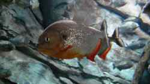

MooEditable - Ascribe fork
Integrates
Ascribe Dialog
Textarea Label (click to focus editor)
<h3>Additions in this fork</h3> <ul> <li>Paragraph function uses button overlay with command customized so extra tags are not inserted when using <a href="http://www.google.com/search?q=safari+formatblock+buggy">Safari</a>.</li> <li>Link function utilizes Ascribe Dialog and has the ability to detect when the cursor is in a link or whether a link is selected. Can detect links to an <a href="mailto:some-email-address@domain.com">email address</a>. Does on-the-fly email address validation. Clicking on a link in the editor will bring up a small "tooltip" menu ala <a href="http://mail.google.com/">Gmail</a> which allows the user to test, edit or remove the link.</li> <li>Modified the <b>checkStates</b> function such that if a button's state attribute is a function, the function will pass the editor object as an argument along with the current node clicked upon in the editor. I needed the editor object to be passed along to a custom state function for the asc_createlink button to properly show and hide link tooltips.</li> </ul> <a href="http://en.wikipedia.org/wiki/Piranha"></a> <h3>Works in</h3> <ul> <li>Firefox</li> <li>Internet Explorer</li> <li>Webkit browsers (Safari, Chrome)</li> </ul> <h3>Issues yet to be resolved</h3> <ul> <li>Toggling between html and editor clears out all undo/redo history.</li> <li>Find a way to internationalize it by allowing a script to supply strings.</li> <li>When the content of the editor is taller than the editor window, the editor document scrolls, obviously. I added a <b>editorScroll</b> function to main MooEditable class to track when the user scrolls the editor in order that the little link tooltips will hide themselves upon scroll. However, the onScroll event doesn't seem to take in Internet Explorer.</b></li> </ul>